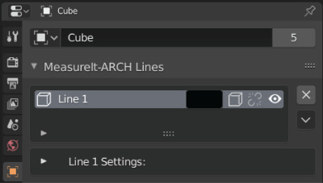
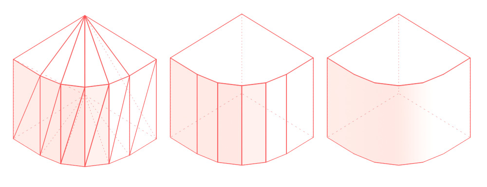
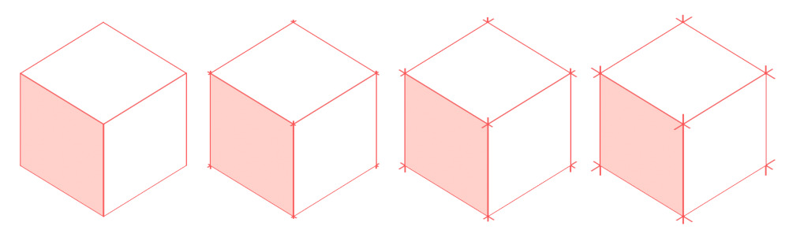

Line Groups
To create linework from 3D models MeasureIt_ARCH uses Line Groups, which can be assigned to mesh edges, or automatically generated for objects. Each line group assigned to an object can have its own style or line settings.
Adding Line Groups (MeasureIt_ARCH Main Panel)
Buttons for adding Line Groups to an object can be found in the MeasureIt_ARCH main panel, in the 3D viewport. You can also access these operators by search for their name in Blender's the Operator Search menu (F3).
Dynamic Line Group(Object Mode Only)
- Creates a Line Group from any edges sharper than a user specified crease angle. This Line Group will refresh automatically whenever changes are made to the model, and can work with geometry generated by Blender's Modifiers or Geometry Nodes. The Line Group is recalculate when entering and exiting Edit Mode.
Line Group by Selection (Edit Mode Only)
- Creates a Line Group from selected edges. Select the desired edges in edit mode and press the Line button.
Warning
Selection based line groups are maintained for backwards compatibility, but are not reccomended, as they will often break when mesh vertex indices change. If you need more precise control over Dynamic Line Groups, try the "Filter Group" setting to limit dynamic line groups to a specific Vertex Group.
 Line Style (Color Swatch Icon):
Line Style (Color Swatch Icon):
- Sets the Style to be assigned to a new Line Group on creation.
Line Group List (Object Settings)
The Line Group List lets you select and edit the properties of the line groups attached to the actively selected object.

- Color: Sets Line Group Color.
- Draw Hidden Lines (Cube with Dashed Lines Icon): This Line Group will draw hidden lines as dashed lines.
- Link Style (Link or Broken Link Icon): Toggles if this Line Group uses a Style.
- Visibility (Eye Icon): Toggles visibility of the Line Group.
- Delete (x Icon): Deletes the Line Group.
Line Group Sub Menu (Chevron Icon)
- Add to Line Group (Edit Mode Only): Adds selected Edges to this Line Group.
- Remove from Line Group (Edit Mode Only): Removes selected Edges from this Line Group.
- Delete All Line Groups: Deletes all Line Groups on the active object
Line Group Settings

- Line Weight: Set the Line Group's line weight.
- Line Weight Group: Use a vertex group's values to modify the line weight.
-
Influence: Adjust the influence of the Line Weight Group.
-
Crease Angle: Crease angle threshold for dynamic line Groups.

- Z Offset: Tweaks the Line Group's Distance from the camera in Clip Space. Higher values move the Lines closer to the camera.
- This is useful for adjusting Line Groups that don't appear to be drawing correctly (Jagged Edges, etc.).
- Making this value negative allows for the drawing of silhouettes. Higher values will move lines further backwards

- Extension: Adds a slight over-extension to each line segment in this Line Group. 
- Hidden Line Color (Only Available if Draw Hidden Lines is Enabled): Sets the color of hidden lines.
- Hidden Line Weight (Only Available if Draw Hidden Lines is Enabled): Sets the line weight of hidden lines.
- Dash Scale (Only Available if Draw Hidden Lines or Draw Dashed is Enabled): Changes the dash size of dashed lines. Larger values make smaller dashes.
- Dash Spacing (Only Available if Draw Hidden Lines or Draw Dashed is Enabled): Changes the dash spacing for dashed lines. 0.5 gives even spacing.
- Draw Dashed: Draws all lines in this Line Group as dashed lines, regardless of visibility.
- Screen Space Dashes: Calculates Dash Spacing in Screen Space. Useful to achieve more even dashes in still renders when some lines are nearly parallel to the view. Can cause dashes to appear to 'slide' along edges when used in animations.
- Draw In Front: Makes this element Ignore Visibility tests.
- Evaluate Depsgraph: Evaluate Blender's Dependency Graph before drawing this MeasureIt_ARCH element.